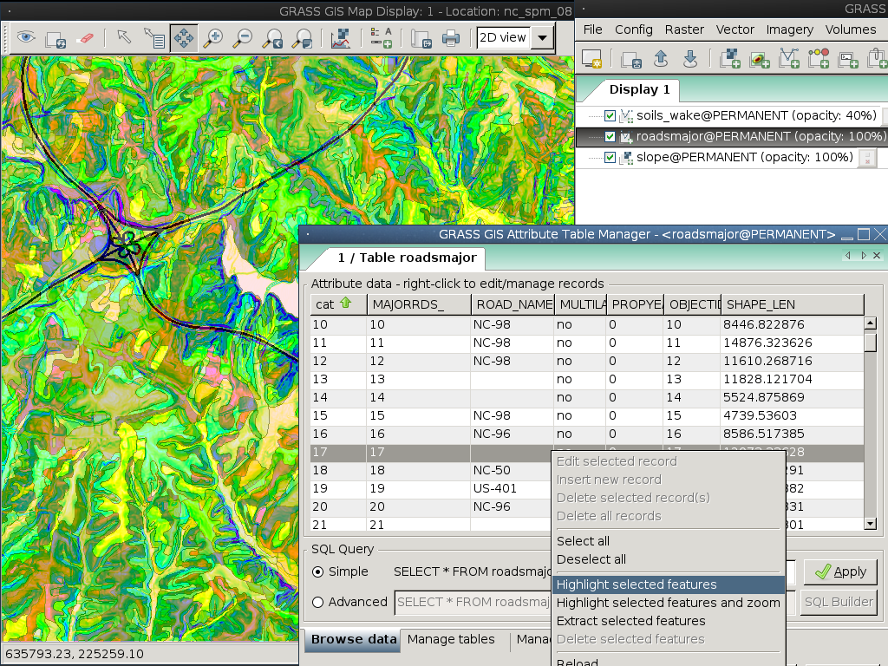

GRASS GIS クイックスタート¶
GRASS GIS は、地理空間データの可視化、管理、分析、および編集を行うことができる強力な GIS です。
Contents
GRASS の起動¶
- メニューから、 GRASS のリンクをクリックします。
- 「Welcome to GRASS GIS 」 ウインドウから、ロケーションに nc_basic_spm_grass7 データセット、マップセットに 「user1」 を選択します。
- Start GRASS session をクリックします。

GRASS が (wsPythonで書かれた)グラフィカルユーザインタフェース として起動します。
ちなみに
ディスプレイが非常に小さいノートPC (解像度800x600) の場合には、スタートアップダイアログが画面からでてしまい、 [Start GRASS] ボタンが、ロケーションやマップセット一覧の裏に隠れてしまうかもしれません。この問題が発生するときは、ウインドウの角をドラッグして、もう少しサイズを大きくしてみてください。ウィンドウを画面の上にずらす必要があるかもしれません (Altキーを押しながら左クリックでドラッグするとウィンドウを動かせます)。
マップの表示¶

- 内部に入ったら、 PERMANENT マップセットから 「elevation」 ラスタマップレイヤ表示を選択します。
- GIS Layer Manager ウインドウにすすみます。
- 「+」 がついたチェッカーボードのツールバーボタンをクリックします。
- 「ラスターマップ名」 プルダウン・リストから選択したいマップ名を選択し、 Ok をクリックします。
- 「+」 と、少し 「V」 字型に似た折れ曲がったポリラインのツールバーボタンをクリックします。
- PERMANNENT マップセットから 「roadsmajor」 ベクトルレイヤーを選択し、 Ok をクリックします。
必要に応じて、ラスターマップ画層を右クリックし、 「選択したマップのズーム」 を選択します。
マップが表示されます。
標高プロファイルのプロット¶

GIS Layer Manager ウィンドウに戻って elevation ラスターマップ名をクリックして選択します。Map Display ウィンドウには、マップ ツールバーのズーム関連ボタンの右に、折れ線グラフとチェッカーボードのアイコンがあります。そのボタンをクリックし、横断表層マップ を選択します。@PERMANENT マップセットが自動的に検索されます。マップが自動的にリストに表示されない場合は、ラスターレイヤーとして elevation マップを再度選択し、Ok を押します。GRASS プロファイル解析ツール ウィンドウで、左から2番目のボタンを選択すると、プロファイルのラインを設定することができます。ボタンをクリックし、 Map Display キャンバス上でいくつかの点をマークします。完了したら、プロファイルウィンドウに戻ります。プロファイルウィンドウを閉じるには、右端の電源(I/O)ボタンをクリックします。
Adjust raster map colors¶
Now you’ll see your new raster map added to the layer list along with the elevation raster map, except this time it will be in your 「user1」 working mapset. You might un-tick the elevation layer’s visibility check-box now so that the two raster layers don’t draw over the top of each other. Click on the checkbox to view your new map if it doesn’t render automatically. The colors might not be as you’d like so let’s change them. With the fractal DEM selected in the layer list, right click on the this raster map layer name and choose 「Set color table」. As an alternative, you can manage color tables in the Raster menu select . In the 『Define』 tab click on the pull-down list for the 「Name of color table」 option, and pick one from the list. 「terrain」 or 「srtm」 are nice choices. Once done click the [Run] button and close the r.colors dialog window. The colors should then update automatically.
陰影図の作成¶

次に、先ほどの elevation レイヤの陰影図を作成します。まず、計算領域 が対象のラスターマップである PERMANENT マップセットの 「elevation」 に一致しているかを確認します。これを行うには、メインの GIS Layer Manager ウィンドウのレイヤリストに読み込まれているかを確認してから、名前を右クリックして、 「マップから計算領域をセット」 を選択します。必要に応じて、下部の 「レイヤー」 タブをクリックしてレイヤリストに戻ります。
ラスター メニューで (地形解析は ラスター メニューの中程にあります) を選択すると、モジュールコントロールダイアログが表示されます。入力マップ名として 「elevation」 @PERMANENT、出力マップとして 「shaded_relief」 を指定します。設定が完了したら、[実行] をクリックします。新しい shaded_relief @user1 マップがレイヤリストに追加されます。他のラスターレイヤのチェックを外すと、新たに作成された陰影図ラスターレイヤのみが表示されます。
分水界と水系¶
もう一度 elevation @PERMANENT マップを選択します。先ほどの範囲から変更を加えた場合は、再度レイヤ名を右クリックし、コンテキストメニューから をクリックして、分水界計算のための全体のマップを考慮に入れます。
注釈
wxGUI のマップ表示のビューとズームは独立しており、処理計算には影響しません。計算領域は でいつでも確認できます。これはラスターグリッド操作の重要な基本です。範囲や解像度が異なるラスターマップは、オンザフライで現在の計算領域にリサンプリングされます。
次に、ラスター メニューから を選択します。r.watershed モジュールが開きます。elevation レイヤを入力マップとして選択し、同じ 『Inputs』 タブで 「Minimum size of the exterior watershed basin」 の threshold を 10000 セルに設定し、 『出力』 タブで 「Name for basins raster map」 basins (水域)オプションに 「elev.basins」 と入力し、その下の 「Name for output stream segments raster map」 streams (水系)オプションに 「elev.streams」 と入力します。 [実行] をクリックします。
GIS Layer Manager ウィンドウに戻り、これら2つの新しいラスターマップがレイヤリストにあることを確認し、水域マップのレイヤ名左側のボックスにチェックが付いていることを確認します。水系マップのチェックを外すこともできます。次に 「elev.basins」 ラスターマップレイヤ名を右クリックし、 「不透明度レベルの変更」 を選択します。約50%に設定すると、 Map Display が再描画されます。(先ほど作成した陰影図などの)マップレイヤを分水界水域マップレイヤの背後に描画する場合は、レイヤリスト内で下にドラッグし、背景として表示するために、表示チェックボックスにチェックが付いていることを確認します。

GIS Layer Manager ウィンドウで、Add various overlays ボタンをクリックし、グリッドレイヤー追加 を選択します。グリッドのサイズに 5000 (地図単位、ここではメートル) を設定します。完了したら、OK をクリックします。必要に応じて、グリッド線とテキストラベルの色を変更できます。
スケールバーを追加するには、Map Display ウィンドウに移動し、先ほどプロファイルツールを選択したボタンの右にある 「マップエレメント追加」 ボタンをクリックし、 「レイヤー追加」 から Ok ボタンをクリックします。スケールバーがマップキャンバスの左上に表示されます。ドラッグして右下に移動します。
今度はこれらのフォントが少しイマイチに思えてくるかもしれません。これは、GIS Layer Manager メニューから を選択し、マップディスプレイタブから [フォント設定] ボタンをクリックして、設定ウィンドウから一つ(例えば DejaVu Sans Bold)を選択し、 [Save] もしくは [Save for this session only] ボタンをクリックすることで、簡単に修正できます。変更を確認するには、完全な再レンダリングが必要となるため、Map Display ウィンドウで一番左のレンダーマップボタンをクリックします。これでフォントは大分ましになったはずです。
ベクトルモジュールの操作¶
上記の作業では、いくつかのラスターモジュールについてのみ説明しました。これは、GRASS GIS がラスターマップのためだけのものであるということではありません。– ベクトルエンジンとモジュールも、ラスターと同じくらいの機能を持っています。GRASS GIS は、あらゆる種類の強力な解析を可能とする、完全なトポロジーベクトルエンジンを持っています。
{kind=link}
上記で作成した分水界水域を元に、次にそれらをベクトルポリゴンに変換します。ラスター メニュから、 を選択します。r.to.vect ダイアログで、elev.basins @user1 が入力マップとして選択されていることを確認し、出力マップの名前を basins_areas のように指定し(ベクトルマップの名前はSQLに準拠している必要があるため、すべての文字が使用できるわけではありません)、 「Output feature type」 を area に設定します。属性 タブで、ラスター値をカテゴリーとして使用(例: IDなど)にチェックを入れ、先ほど作成した水系セグメントラスターマップと値を一致させるようにします。そして [実行] をクリックします。新しいベクトルマップが表示されたら、Layer Manager リストでそれを右クリックし、不透明度レベルを 50% に設定します。
ベクトルマップの色の調整¶
先ほどラスターマップで行ったように、新しい分水界水域ベクトルマップのカラーテーブルを変更します。レイヤリストで basins_areas を選択した状態で、このベクトルマップレイヤ名を右クリックし、 「カラーテーブルのセット」 を選択します。』Define』 タブで 「Name of color table」 オプションからプルダウンリストをクリックし、リストから 「bcyr」 (blue(青)-cyan(シアン)-yellow(黃)-red(赤)) などを選択します。完了したら、 [実行] ボタンをクリックして、v.colors ダイアログウィンドウを閉じます。カラー化されたベクトルマップ表示するには、マップを再描画する必要があるかもしれません。
{kind=link}
属性の管理¶
次に、これらの新しい領域に、各水域の平均標高を含むいくつかの属性を追加します。ベクトルメニューから、 を選択します。ベクトルマップ名として basin_areas を使用し、elevation ラスターマップを選択して、そこから統計情報を計算します。そして、 「新しい属性列の列プリフィックス」 を elev に設定し、 [実行] をクリックします。完了したらダイアログを閉じます。Map Display ウィンドウで、左から4番目のアイコンを使用して値を照会できます。Layer List でベクトル領域マップが選択されていることを確認した後、マップキャンバスでベクトル領域をクリックします。
v.colors モジュールを使用することで、平均標高値に基づいて領域を再配色できるようになります。ベクトルメニューで、 を選択してください。入力ベクトルマップとして basin_areas を選択し、 「Source value」 として、cat のかわりに、attr を選択します。そして、 「Define」 タブで数値範囲を含む列(Name of column containing numeric data)の elev_average 属性列を選択します。elevation ラスターマップから色をコピーしたいので、 「Raster map from which to copy color table」 にそれを選択します。[実行] をクリックした後、更新された水域マップを表示するには、マップ表示を(左から最初のアイコンで)更新する必要があります。
次に、属性テーブルとSQLビルダーを詳しく見ていきましょう。Layer Manager で、ツールバーの下側の左から2番目のテーブルアイコン (「Show attribute data for selected vector map」) をクリックします。選択したベクトルマップにアタッチされているデータベーステーブルのビューが開きます。ここでは、たくさんある中でも 簡単な データベースクエリを実行して、分水界の水域を検索しましょう。SELECT * FROM basin_areas WHERE と表示されている箇所で、プルダウンリストから標準偏差統計 elev_stddev を選択し、リレーションリストから < を選択して、テキストボックスに 50 を入力して [Apply] をクリックします。ウィンドウ下部の情報バーに読み込まれているレコード数が少なくなり、標準偏差 (std. dev.) として大きな値が含まれている行は、表示されているテーブルから見えなくなります。テーブルデータ上で右クリックし、全て選択 を選択します。再度テーブルデータ上で右クリックし、選択したフィーチャの強調表示 を選択します。Map Display に沖積氾濫水域やメサ(卓上台地)などが表示されます。
3D 可視化表示¶

3D可視化スイートを開始するには、Layer list でラスター標高として elevation マップを選択し、さらに追加の項目を選択してから、Map Display ウィンドウで 「3D表示」 (ツールバーの右端) を選択します。3D表示インタフェースが読み込まれると、3D表示のコントロール用のタブがいくつか表示されます。次に 「データ」 タブを選択し、 解像度に 「1」 を設定し(値が低いほど解像度は高くなります)、 「ビュー」 タブで位置決めコントロールと高さスライダを動かして、視点を変更します。
DEMの上に衛星画像や航空写真を重ね合わせるには、 「データ」 タブで 曲面属性 マップのオーバーレイイメージとして PERMANNENT マップセットの 「landuse」 を選択します。新しいビューはすぐにレンダリングされます。領域は比較的平坦なため、 「ビュー」 タブに戻り、Z 鉛直方向の誇張 (「Z-鉛直」) を増やすこともできます。
3D表示で簡単に操作するために、Map Display のツールバーから 「Rotate 3D scene」 をオンにし、マウスを使用してビューを移動します。
試してみること¶
ここでは説明していませんが、カートグラフィックコンポーザーとオブジェクト指向描画モデリングツール(Pythonへのエクスポートを提供)を試してみてください。Layer Manager ウィンドウのアイコンの下の行に、アイコンが表示されています。詳細については、 wxGUI ヘルプページを参照してください。
API¶
wxGUIはPythonで書かれており、Pythonプログラミングのファンならば、素晴らしいツールやAPIがたくさんあります。Layer Manager ウィンドウの下部にある Python shell タブをクリックし、help(grass.core) と入力すると、コアGIS Pythonライブラリで使用できる多くの関数のリストが表示されます。コアGIS関数の他に、 array (NumPy)、 db (データベース)、 raster 、 vector ライブラリも利用できます。高度な使用のために Pythons Ctypes がサポートされており、PythonプログラマーがGRASS GISの広範なCライブラリに直接アクセスできるようになっています。高度なプログラミングの詳細については、マニュアルページを参照してください。
コマンドライン¶
GRASS端末セッションで、モジュールのオプションを表示する 「v.clean --help」 をタイプして、GRASSモジュールを試すことができます。GRASSコマンドラインを使うと、GISの本当のパワーを得られます。多量のデータをまとめて処理するジョブを、スクリプトのなかで全てのコマンドを結びつけて実行できるように、GRASSはデザインされています。スクリプト作成が容易にできるように、人気スクリプト言語のBourneシェルやPythonの双方で簡単に利用できる、巧みなトリックがいろいろ提供されています。これらのツールを使うと、たった5分のコーディングだけで、強力なパーサやGUIにヘルプページまでついたGRASS モジュールを新規作成できます。
「g.manual -i」 を実行すると、Webブラウザがひらき、モジュールのヘルプページがひらきます。完了したらブラウザを閉じ、GRASSターミナルプロンプトで 「exit」 と入力してGIS環境を終了します。
次のステップ¶
- GRASS GIS Webサイト https://grass.osgeo.org
- GRASS GIS Wikiヘルプサイト https://grasswiki.osgeo.org/wiki/
- チュートリアルや概要は、 こちら.
- GRASS GISモジュールの概要
- GRASSに付属する400個の GIS モジュールで不足する場合、 https://grass.osgeo.org/grass78/manuals/addons/ に大量のアドオンがあります。